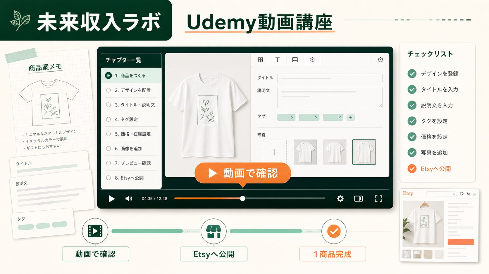

はじめに
完成状態、必要ツール、費用、進め方を確認します。
UDEMY VIDEO COURSE
画面を見て、止めて、自分の画面で同じ操作をする。商品案からEtsy公開までを、動画とチェックリストで順番に進めます。

COURSE RESULT
「動画を見終えた」ではなく、自分のEtsyショップに商品ページを公開した状態を到達点にします。
4 PHASES
チャプターごとに動画を止め、同じ作業を自分の画面で終えてから次へ進みます。
全12セクション・約3〜3.5時間予定
動画の尺は約3〜3.5時間を想定しています。本人確認、画像の作り直し、各サービスの審査などを含む実作業時間は人によって異なります。
完成状態、必要ツール、費用、進め方を確認します。
候補を3つ出し、最初に進める1つを選びます。
商品案を3つ出し、採用する1案を決めます。
初心者向け4型から、商品の見た目を決めます。
プロンプトを作り、Tシャツ用画像を1枚完成させます。
Etsyの商品ページへ入れる文章を作ります。
固定例で赤字を避け、権利・綴り・画像を確認します。
Etsy開設、本人確認、Payoneer、Printify連携を進めます。
標準Tシャツ、印刷会社、色・サイズ、画像配置を決めます。
米国向け送料と、赤字を避ける販売価格を設定します。
モックアップと必須項目を整え、Etsyへ公開します。
表示、価格、送料、選択肢、Printify連携を確認します。
INCLUDED
最初の1商品を公開するための動画と確認項目に集中しています。
実際にどこを押し、何を入力するかを画面で確認します。
止めたい場所へ戻りやすく、作業単位で見直せます。
商品公開前後に確認する項目を、動画と同じ順番で使います。
COURSE SCOPE
詳しいリサーチや運営まで詰め込まず、動画を見ながら公開まで完走することを優先します。
講座に含まれるもの
この講座では扱わないもの
UDEMYで公開予定
価格は公開準備が整い次第、このページでご案内します。
本講座は売上、利益、検索順位、初回販売までの期間を保証するものではありません。
UDEMY OR BRAIN
Udemyを受けてからBrainを買う必要はありません。学び方と到達点で、どちらかを選べます。
UDEMY
BRAIN
FAQ
講座の範囲と、Etsy側で止まる可能性を先に説明します。
本人確認やPayoneerなどの審査が完了していれば公開まで進みます。審査中の場合は、承認後に公開できる商品ページの状態まで整えます。
はい。最初の1商品をEtsyへ公開するためにBrainを購入する必要はありません。
3〜3.5時間は動画の想定尺です。画像の作り直し、アカウント開設、本人確認、入力作業の時間は含まず、進行時間には個人差があります。
EtsyとPrintifyの画面は変更されることがあります。考え方と入力項目を中心に説明し、変更点は概要欄の補足や動画差し替えで対応します。
Udemyは公開直後の確認までです。注文後の英語メッセージ、トラブル対応、Payoneer出金、利益記録はBrainセルフ教材の範囲です。